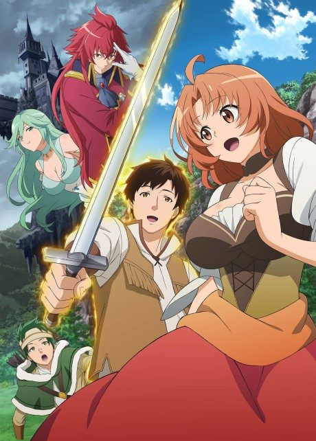

Poco's Udon World
うどんの国の金色毛鞠
Souta, a web designer, returns to his hometown in Kagawa and finds a little boy who is secretly a tanuki.
We haven't found where the anime ends in the manga yet.
7.5AniList score
—Animeter, no votes yet
12episodes
Rate it or report where you stopped
Anime finished. Where does the manga pick up?
StatusNo source yet
We looked for where the anime ends in the manga but found no source we trust yet. The manga is 72 chapters, finished.
More like Poco's Udon World
 Manga Ch. 618.1
Manga Ch. 618.1
 Manga Ch. 1098.0
Manga Ch. 1098.0
 Manga Ch. 877.7
Manga Ch. 877.7
 Manga Ch. 538.2
Manga Ch. 538.2
 Manga Ch. 488.0
Manga Ch. 488.0

Unclear6.8 Film8.1
Film8.1
 Manga Ch. 407.7
Manga Ch. 407.7
 Unclear7.6
Unclear7.6
Unclear7.4
Sweetness & Lightning Done7.5
Done7.5
 Manga Ch. 807.1
Manga Ch. 807.1